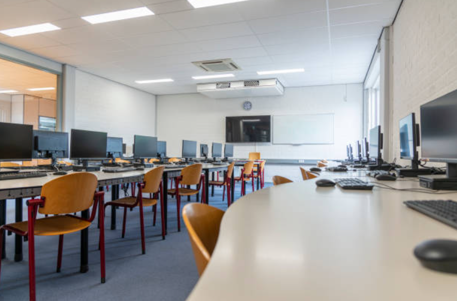

Digital Learning
Computer lab access supports research, coding foundations, presentation skills, and responsible technology use.
Academics
Students learn through strong fundamentals, technology-enabled practice, robotics, language confidence, reasoning, and preparation for competitive exams at school itself.

Computer lab access supports research, coding foundations, presentation skills, and responsible technology use.

Students learn to plan, build, test, and improve, turning curiosity into engineering habits.

Academics are supported by green spaces, sports, yoga, expression, and personal mentoring.
Competitive edge
Stone Field plans academic partnerships so students can work on olympiad-style thinking, reasoning, English confidence, and competitive exam preparation during school life.